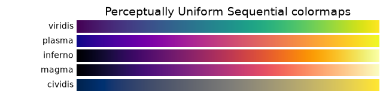
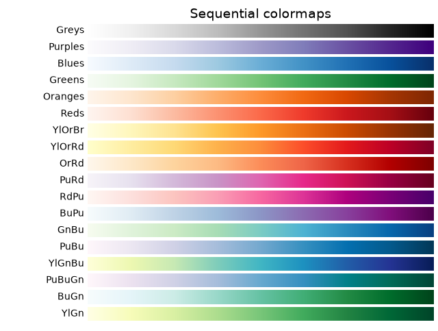
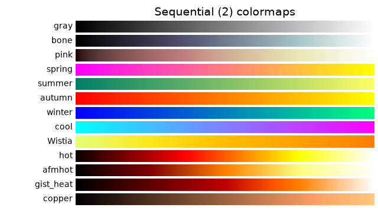
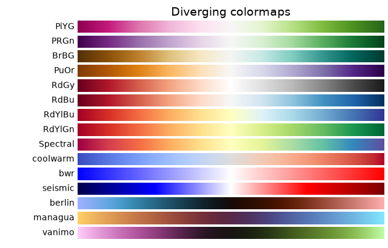
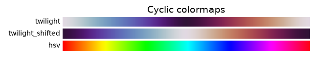
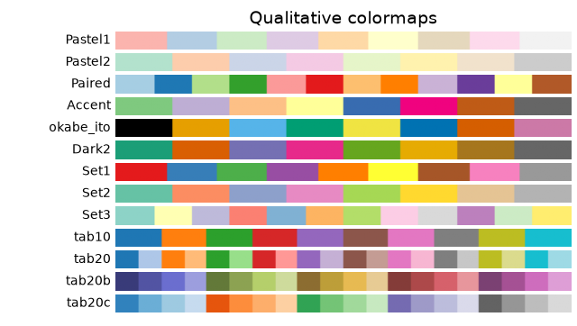
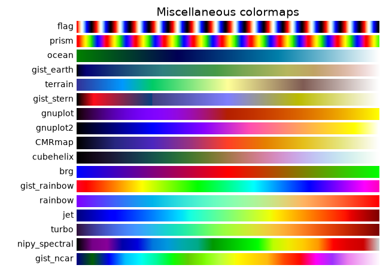

Note
Go to the end to download the full example code.
Colormap reference#
Reference for colormaps included with Matplotlib.
A reversed version of each of these colormaps is available by appending
_r to the name, as shown in Reversed colormaps.
See Choosing Colormaps in Matplotlib for an in-depth discussion about colormaps, including colorblind-friendliness, and Creating Colormaps in Matplotlib for a guide to creating colormaps.
import matplotlib.pyplot as plt
import numpy as np
cmaps = [('Perceptually Uniform Sequential', [
'viridis', 'plasma', 'inferno', 'magma', 'cividis']),
('Sequential', [
'Greys', 'Purples', 'Blues', 'Greens', 'Oranges', 'Reds',
'YlOrBr', 'YlOrRd', 'OrRd', 'PuRd', 'RdPu', 'BuPu',
'GnBu', 'PuBu', 'YlGnBu', 'PuBuGn', 'BuGn', 'YlGn']),
('Sequential (2)', [
'gray', 'bone', 'pink', 'spring', 'summer', 'autumn', 'winter',
'cool', 'Wistia', 'hot', 'afmhot', 'gist_heat', 'copper']),
('Diverging', [
'PiYG', 'PRGn', 'BrBG', 'PuOr', 'RdGy', 'RdBu',
'RdYlBu', 'RdYlGn', 'Spectral', 'coolwarm', 'bwr', 'seismic',
'berlin', 'managua', 'vanimo']),
('Cyclic', ['twilight', 'twilight_shifted', 'hsv']),
('Qualitative', [
'Pastel1', 'Pastel2', 'Paired', 'Accent', 'okabe_ito',
'Dark2', 'Set1', 'Set2', 'Set3',
'tab10', 'tab20', 'tab20b', 'tab20c']),
('Miscellaneous', [
'flag', 'prism', 'ocean', 'gist_earth', 'terrain', 'gist_stern',
'gnuplot', 'gnuplot2', 'CMRmap', 'cubehelix', 'brg',
'gist_rainbow', 'rainbow', 'jet', 'turbo', 'nipy_spectral',
'gist_ncar'])]
gradient = np.linspace(0, 1, 256)
gradient = np.vstack((gradient, gradient))
def plot_color_gradients(cmap_category, cmap_list):
# Create figure and adjust figure height to number of colormaps
nrows = len(cmap_list)
figh = 0.35 + 0.15 + (nrows + (nrows-1)*0.1)*0.22
fig, axs = plt.subplots(nrows=nrows, figsize=(6.4, figh))
fig.subplots_adjust(top=1-.35/figh, bottom=.15/figh, left=0.2, right=0.99)
axs[0].set_title(f"{cmap_category} colormaps", fontsize=14)
for ax, cmap_name in zip(axs, cmap_list):
ax.imshow(gradient, aspect='auto', cmap=cmap_name)
ax.text(-.01, .5, cmap_name, va='center', ha='right', fontsize=10,
transform=ax.transAxes)
# Turn off *all* ticks & spines, not just the ones with colormaps.
for ax in axs:
ax.set_axis_off()
for cmap_category, cmap_list in cmaps:
plot_color_gradients(cmap_category, cmap_list)







Discouraged
For backward compatibility we additionally support the following colormap names, which are identical to other builtin colormaps. Their use is discouraged. Use the suggested replacement instead.
Colormap |
Use identical replacement instead |
|---|---|
gist_gray |
gray |
gist_yarg |
gray_r |
binary |
gray_r |
Reversed colormaps#
Append _r to the name of any built-in colormap to get the reversed
version:
plot_color_gradients("Original and reversed ", ['viridis', 'viridis_r'])
The built-in reversed colormaps are generated using Colormap.reversed.
For an example, see Reversing a colormap
References
The use of the following functions, methods, classes and modules is shown in this example:
Total running time of the script: (0 minutes 1.783 seconds)